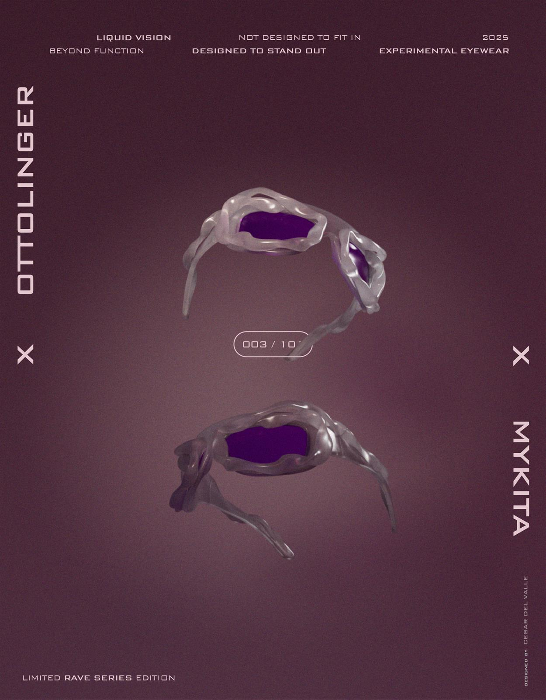
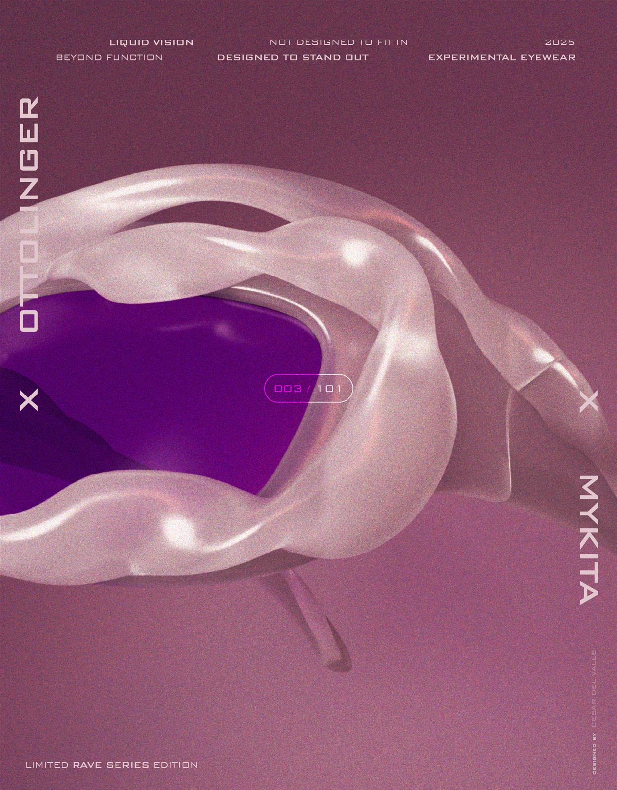
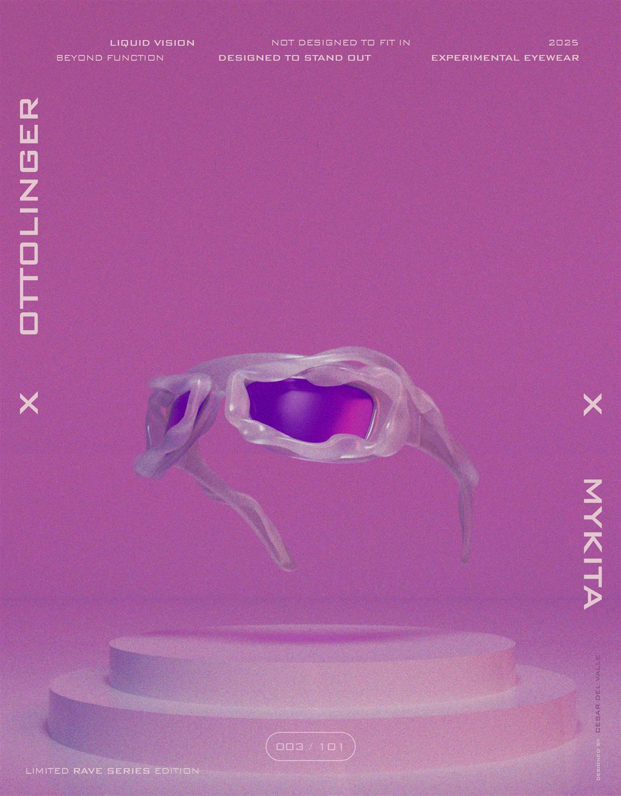

Project 023D · Motion · Eyewear
Liquid Vision — eyewear experimental modelado en 3D. No diseñado para encajar, sino para destacar.
Colaboración conceptual entre Ottolinger y Mykita: una serie limitada de gafas experimentales modeladas y renderizadas íntegramente en Cinema 4D. Cromo líquido, lentes violeta y una dirección de arte editorial, con un spot audiovisual que lleva la pieza del render al movimiento.
Tres piezas de la serie experimental: cromo líquido, lentes violeta y una paleta que viaja del aubergine al magenta.


